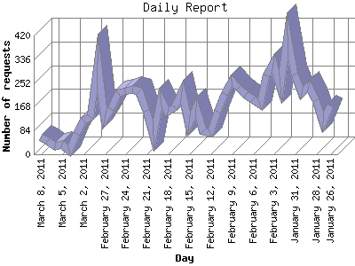

The Daily Report identifies the activity for each day within the reporting period. Remember that one page hit can result in several server requests as the images for each page are loaded.

| Day | Number of requests | Number of page requests | |
|---|---|---|---|
| 1. | January 26, 2011 | 171 | 19 |
| 2. | January 27, 2011 | 114 | 12 |
| 3. | January 28, 2011 | 191 | 24 |
| 4. | January 29, 2011 | 240 | 24 |
| 5. | January 30, 2011 | 216 | 21 |
| 6. | January 31, 2011 | 283 | 26 |
| 7. | February 1, 2011 | 419 | 34 |
| 8. | February 2, 2011 | 238 | 26 |
| 9. | February 3, 2011 | 322 | 41 |
| 10. | February 4, 2011 | 278 | 28 |
| 11. | February 5, 2011 | 175 | 24 |
| 12. | February 6, 2011 | 194 | 20 |
| 13. | February 7, 2011 | 210 | 24 |
| 14. | February 8, 2011 | 234 | 20 |
| 15. | February 9, 2011 | 259 | 25 |
| 16. | February 10, 2011 | 213 | 21 |
| 17. | February 11, 2011 | 149 | 20 |
| 18. | February 12, 2011 | 76 | 9 |
| 19. | February 13, 2011 | 83 | 7 |
| 20. | February 14, 2011 | 165 | 20 |
| 21. | February 15, 2011 | 107 | 12 |
| 22. | February 16, 2011 | 221 | 23 |
| 23. | February 17, 2011 | 165 | 19 |
| 24. | February 18, 2011 | 151 | 19 |
| 25. | February 19, 2011 | 196 | 18 |
| 26. | February 20, 2011 | 66 | 6 |
| 27. | February 21, 2011 | 154 | 18 |
| 28. | February 22, 2011 | 221 | 25 |
| 29. | February 23, 2011 | 230 | 33 |
| 30. | February 24, 2011 | 222 | 26 |
| 31. | February 25, 2011 | 216 | 23 |
| 32. | February 26, 2011 | 161 | 19 |
| 33. | February 27, 2011 | 126 | 9 |
| 34. | February 28, 2011 | 326 | 37 |
| 35. | March 1, 2011 | 131 | 15 |
| 36. | March 2, 2011 | 119 | 11 |
| 37. | March 3, 2011 | 72 | 10 |
| 38. | March 4, 2011 | 13 | 6 |
| 39. | March 5, 2011 | 34 | 4 |
| 40. | March 6, 2011 | 27 | 4 |
| 41. | March 7, 2011 | 48 | 9 |
| 42. | March 8, 2011 | 61 | 9 |
Most active day December 3, 2010 : 90 pages sent. 419 requests handled.
Daily average: 19 pages sent. 173 requests handled.
This report was generated on March 8, 2011 19:03.
Report time frame October 8, 2010 18:11 to March 8, 2011 18:15.
| Web statistics report produced by: analog 5.1 / Report Magic 2.21 |